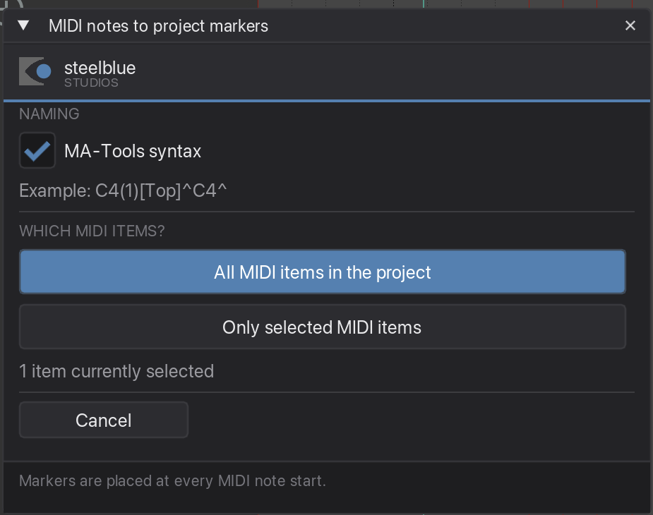
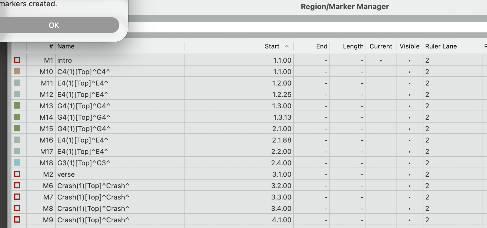

Turns every MIDI note into a project marker, named after the note and coloured by pitch — so you can write your cue rhythm as MIDI and get the markers for free.
Placing cues by ear, one marker at a time, is slow and never quite tight. Playing them in as MIDI is fast, quantises to the grid, and can be edited like music. This plugin takes that MIDI item and puts a marker at the start of every note.
Each distinct note name gets its own colour, so a kick pattern and a hat pattern are visually separate on the ruler — and since colour is what splits cue lists in MA-Tools, the sequences fall out of that automatically.
Click the item in the arrange view. If you want several, select them all — or skip this and use the whole project in the next step.
Press Cmd + Shift + H. The window tells you how many items are currently selected, so you can check before committing.

MA-Tools syntax is on by default: a C4 becomes C4(1)[Top]^C4^, ready to trigger. Switch it off if you just want the plain note name — C4 — for example when you intend to run Rename selected markers over them afterwards.
If the track has custom MIDI note names, those are used instead of the pitch. Name your notes KickStart and Hihat in REAPER and the markers arrive already carrying those names.
| All MIDI items in the project | Every MIDI item, regardless of selection. |
| Only selected MIDI items | Just what you picked in step 1. |

If the item loops its source, markers are created for every repetition you can see — across the item's full visible length, not just the first pass.
Above 2000 markers the plugin counts first and asks whether you really want them. A dense 16th-note pattern over a whole song adds up quickly, and undoing several thousand markers is no fun.
Note length is ignored — only the start matters, which is what a cue trigger needs. So write your cue rhythm with short notes; it makes the MIDI easier to read without changing the result.